Skip to main content
101 - Install and configure RasPBX
This guide will walk you through setting up the RasPBX, connecting to two virtual softphones, and placing a call between the two phones.
Items needed for this build
- Raspberry Pi (Not all Raspberry Pis are supported. Please check the documentation on the RasPBX Download page.)
- 8GB or larger microSD card
- RasPBX Image - RasPBX - Asterisk for Raspberry Pi Website
- Image writing software such as balenaEtcher - balenaEtcher Webpage
- 2 or more devices to run softphone software. These may be iOS, Android, Windows, or Linux devices.
Step 1 - Install RasPBX
-
Go to the RasPBX (Asterisk for Raspberry Pi) site and navigate to the downloads page.

-
Download the latest RasPBX image file (The latest version is 10-10-2020 as of 9 December 2020.)
-
Write the image to the microSD card using image writing software such as balenaEtcher. The steps and
images below are from balenaEtcher. If you use another imaging software application, the steps may be
different but the process is similar.
-
Click the "Flash from file" button to select the image file
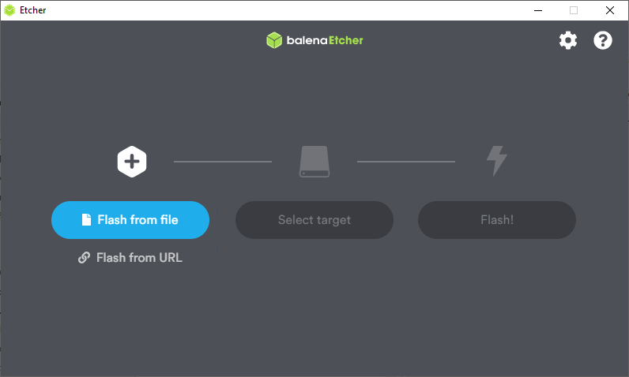
-
Select the zip file that you downloaded and click the "Open" button in the Open File Dialog window.

-
Click the "Select target" button

-
Select the microSD card from the list of devices and click the "Continue" button. Make certain that you are selecting the correct drive letter. balenaEtcher is nice in that
it provides warnings to you if the drive is a large drive, but it is your responsibility to select the correct drive. If you accidently
overwrite another drive, you will not be able to recover the data, so make certain you select the correct drive.
-
Click the "Flash!" button to write the image to the microSD card.

NOTE:If you see a User Account Control (UAC) dialog box, click the "Yes" button to continue.

-
Wait until the flash process completes. It will take several minutes. You will see the screens shown below.
NOTE: If you are prompted to format the disk at any time, do not format the disk! Click the cancel button on the dialog box.


NOTE: Windows may access the drive once the Flashing of the drive is complete. If this happens, you may
see a message stating that you need to format the disk. Click Cancel on the dialog. Etcher may then present a
message that there is "1 Failed device" on the "Flash Complete" screen. This is due to Windows creating a
“System Volume Information” folder on the microSD card during validation. You may safely ignore the error and
continue. If you wish to learn more about this message, you may read
issue #17634
on the Tails GitLab project.
 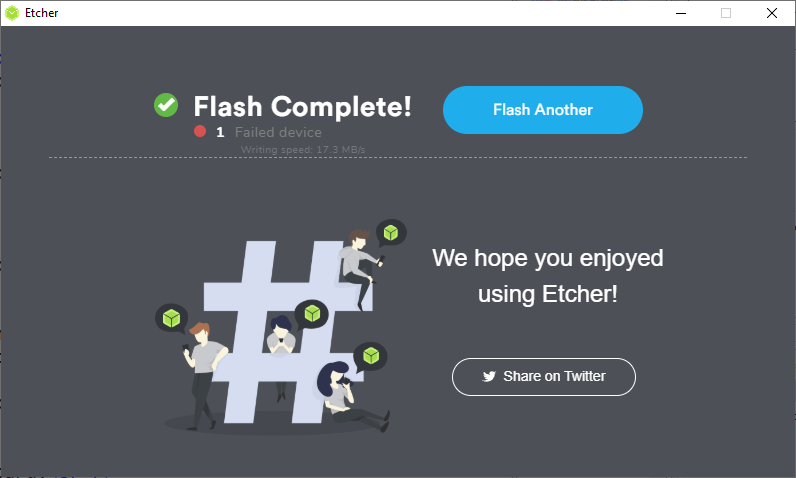
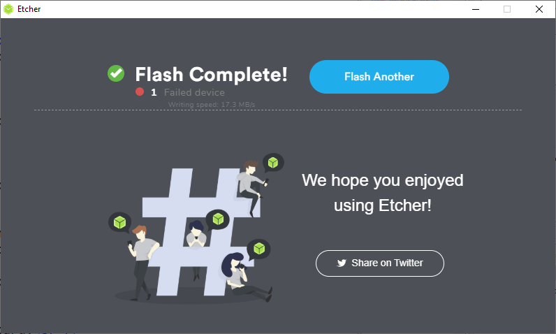
- Insert the microSD card in the Raspberry Pi and power it on.
Step 2 - Setup and configure RasPBX
-
When the Raspberry Pi boots and is prompting for a username and password, login with the default values.
Username: root
Password raspberry
-
Launch the Raspberry Pi Configuration application by typing the following at the prompt.
NOTE: Do not type the prompt "root@raspbx:~#". It is displayed for context only.
root@raspbx:~# raspi-config
-
Press tab to place the focus on the "<OK>" button and press Enter.
- (Optional) Enable SSH to allow administration from another PC using applications such as PuTTY and WinSCP.
-
Scroll down to option "5 Interfacing Options", press tab to place the focus on the "<Select>" button and press Enter.
-
Scroll down to option "P2 SSH", press tab to place the focus on the "<Select>" button and press Enter.

-
Make certain that the focus is on the "<Yes>" button and press Enter.
-
Make certain that the focus is on the "<Ok>" button and press Enter.
-
(Optional) Change Localization settings
If you are not located in the UK, it is a good idea to change options such as Timezone and Localization.
-
Timezone
-
Scroll down to option "4 Localisation Options", press tab to place the focus on the "<Select>" button and press Enter.

-
Timezone - Select the "L2 Change Time Zone" option and set the values for your timezone.
The screenshots show the options for Eastern Standard Time (EST).

-
Scroll down to option "4 Localisation Options", press tab to place the focus on the "<Select>" button and press Enter.

-
Keyboard - Select the "L3 Change Keyboard Layout" option and set the values for your keyboard.
The screenshots show the options for US Standard Keyboard.


 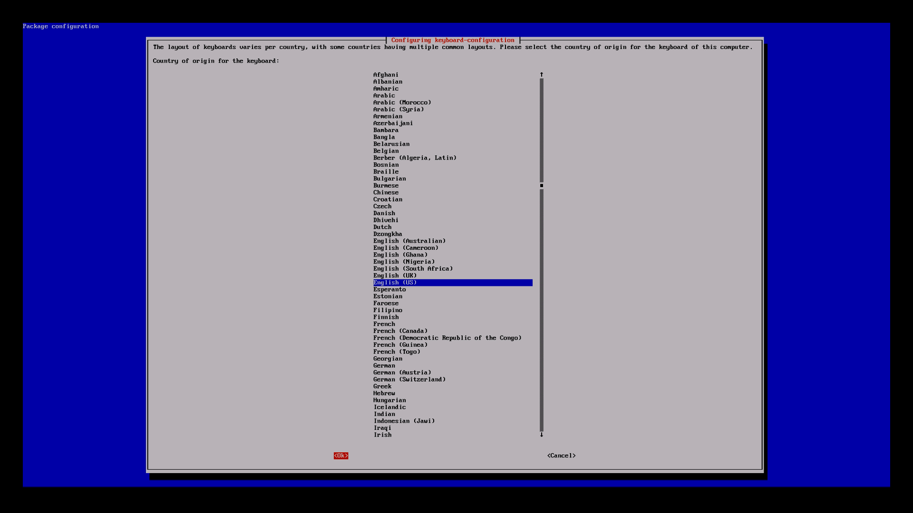
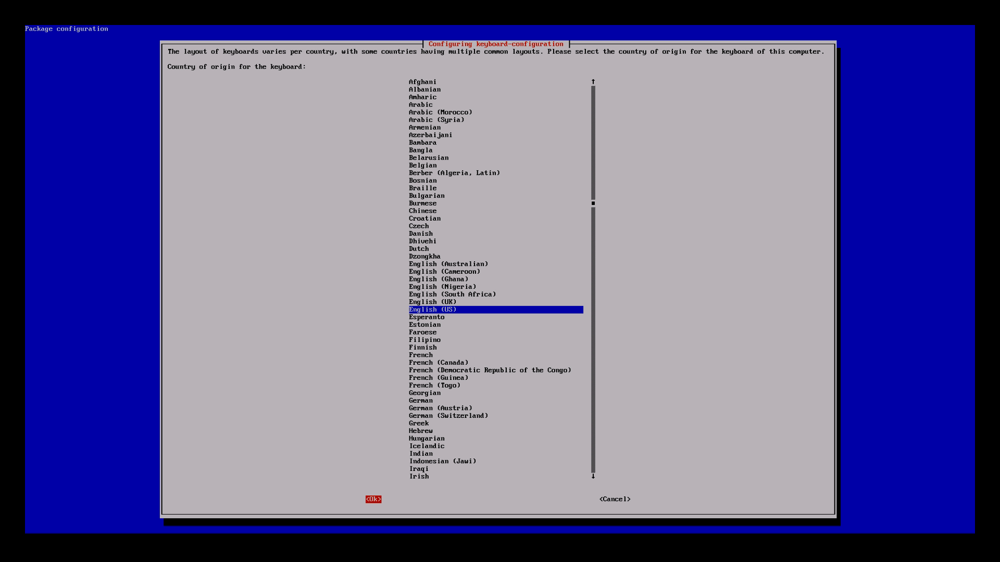
 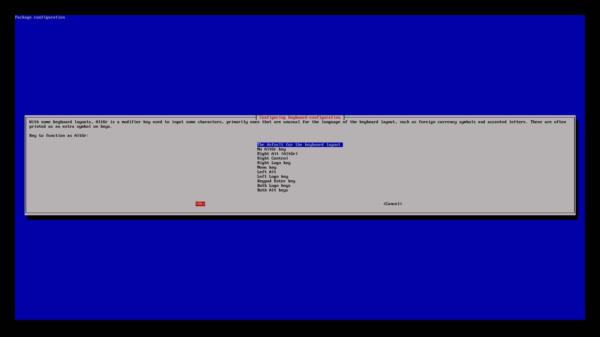
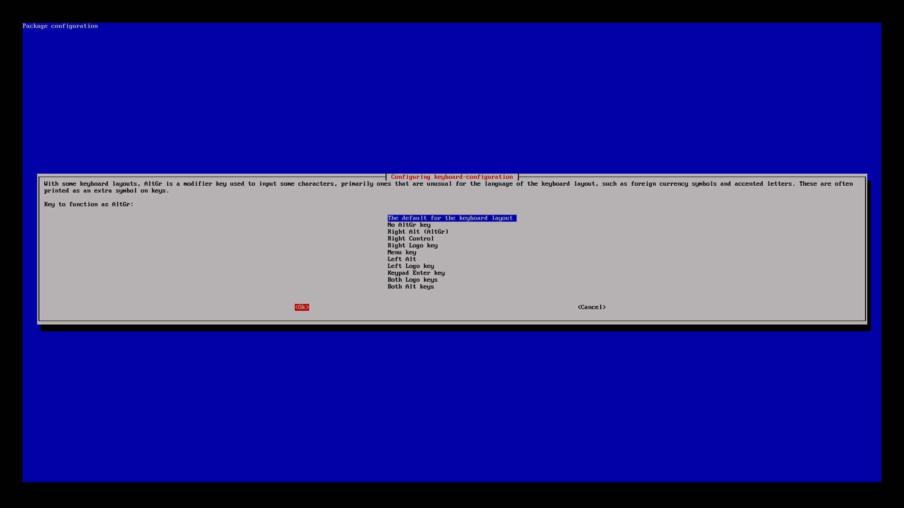
-
(Optional) Expand the File System
If your card is larger than 4GB, then you may want to expand the filesystem to be able to use all the space on the card.
-
Scroll down to option "6 Advanced Options", press tab to place the focus on the "<Select>" button and press Enter.

-
Scroll down to option "A1 Expand Filesystem", press tab to place the focus on the "<Select>" button and press Enter.
-
Make certain that the focus is on the "<Ok>" button and press Enter.
-
Tab to the <Finish> button and press the Enter key.
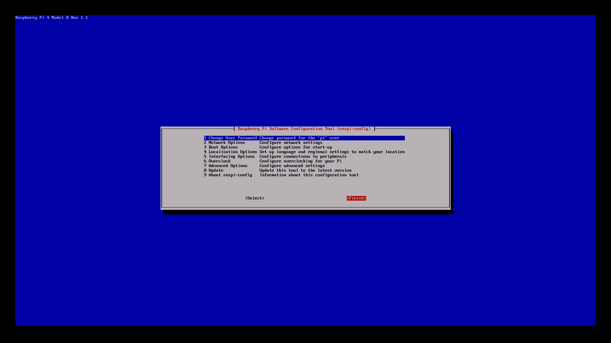
-
Tab to the <Yes> button and press the Enter key to reboot the Raspberry Pi.

After the Raspberry Pi reboots, it is possible to administer the Raspberry Pi on another computer.
You may use PuTTY
to run commands and WinSCP
to transfer files between your PC and the Raspberry Pi.
You may be able to connect to the Raspberry Pi using raspbx.local but if that does not work, you will
need to find the IP Address for the Raspberry Pi. There are a few ways to find the IP Address. The most
straight forward way is to log into the Raspberry Pi and run the command "ifconfig" to obtain the IP
Address. Another method is to go to your router or DHCP server and look at the list of leases. Your
Raspberry Pi may be listed as "RASPBX". Note the IP Address and use it in PuTTY or WinSCP to connect
to the Raspberry Pi.

NOTE: It is suggested that you give your Raspberry Pi a static IP Address. There are several ways
to assign a static IP Address. You may setup the Raspberry Pi to use a static IP Address or you may
create a reservation on your DHCP server.
Step 3 - Update RasPBX
This step is optional but highly recommended. The steps here will cover updating the operating system and the
FreePBX/Astrisk software.
NOTE: This step requires that you know the IP Address of the RasPBX. If you have not obtained the IP Address,
open a terminal window on the RasPBX and run the ifconfig command.
The following steps will be using PuTTY from a Windows machine, which runs commands on the RasPBX remotely using SSH.
-
Connect to the RasPBX with your SSH Client such as PuTTY


-
Log into RasPBX. Below are the default username and password.
Username: root
Password: raspberry
-
Run the command "raspbx-upgrade" in the terminal window
If prompted for input, select the default value by pressing enter.
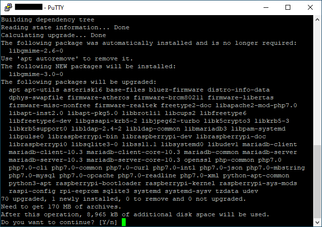
Step 4 - Initial RasPBX Setup
-
Open a web browser and navigate to http://raspbx.local/ or use the IP Address or your Raspberry Pi.
-
The Initial Setup Screen is shown. Complete the requested information and click the "Setup System" button.
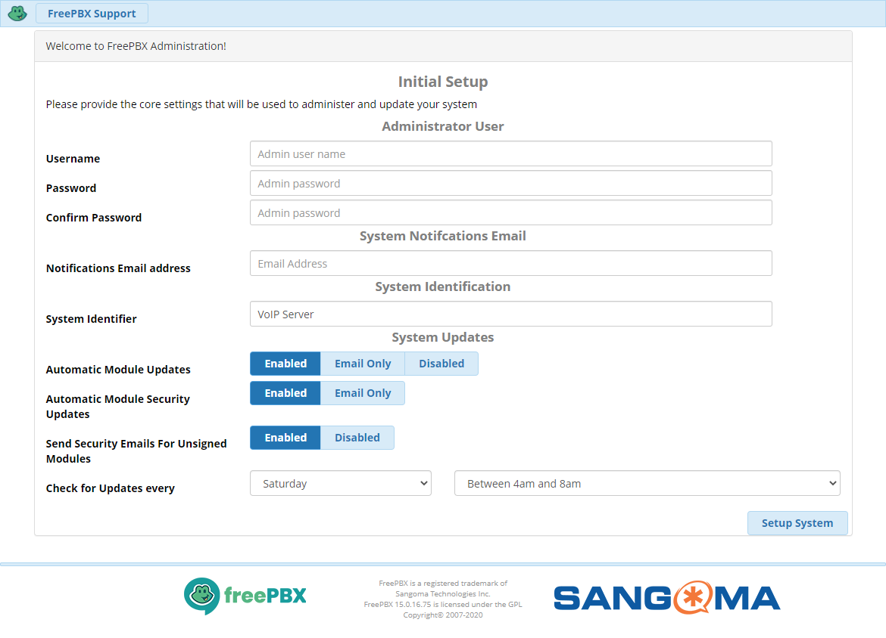
-
Click on the "FreePBX Administration" button

-
Enter the username and password that you created on the Initial Setup Screen to log into FreePBX.
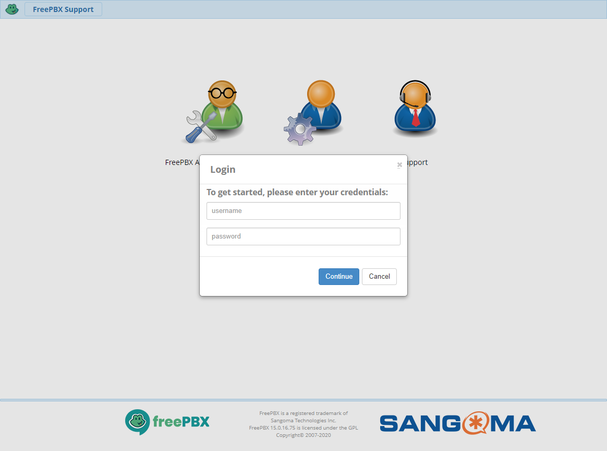
-
Change the localization settings if necessary and click the "Submit" button
-
Click the "Admin" menu item and select "Updates" from the drop-down

-
Click the "Module Updates" tab

-
Click the "Check Online" button
-
Click the "Upgrade all" button
-
Click the "Process" button
-
Click the "Confirm" button
-
Click the "Return" button

-
Click the red "Apply Config" button in the upper right
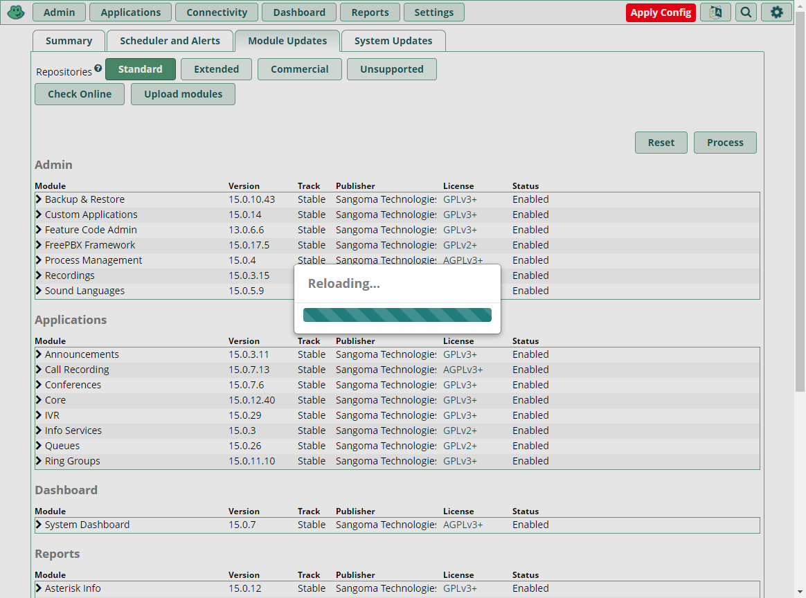
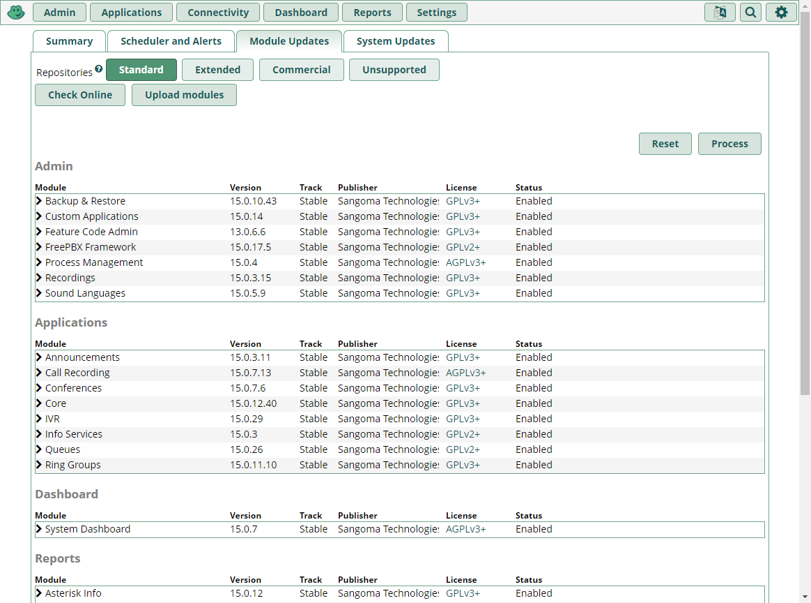
Step 5 - Add extensions to RasPBX for the softphones
-
Open a web browser and navigate to http://raspbx.local/ or use the IP Address or your Raspberry Pi.

-
Enter the username and password you created during the initial RasPBX setup and click the "Continue" button.
-
Click on the "Applications" button and select the "Extensions" option from the drop-down menu.


-
Click the "+Add Extension" button and select "Add New SIP [chan_pjsip] Extension" from the drop-down menu.
NOTE: Other extension types may work but PJSIP is what I used here.

![FreePBX Extensions Application - Add New SIP [chang_pjsip] Extension](./images/101/RasPBX-Extensions_06.png)
-
Enter values in the following fields and click the "Submit" button.
- User Extension
- Display Name
- Outbound CID
NOTES:
- To get more information on a field, place your mouse over the "?" icons next to each field to view a description of what to enter in the field.
- Click into the "Secret" field and copy the value as we will need it to setup the softphone.

-
Click on the "Voicemail" tab to turn on voicemail for the extension.
-
Click on the "Yes" button for the "Enabled" option to enable voicemail. Enter a Voicemail Password. The
default is to enter the extension number. The user will need to change the password when setting up
voicemail if the password is the same as the extension. Once voicemail is enabled and the "Voicemail
Password" are set, click the "Submit" button.


-
Repeat the above steps to add an extension for another softphone then click the "Apply Config" button.

-
Click the "Settings" menu and select the "Asterisk SIP Settings" drop-down item.

-
Click the "Detect Network Settings" button to get your current external IP Network Address, then click the "Submit" button.
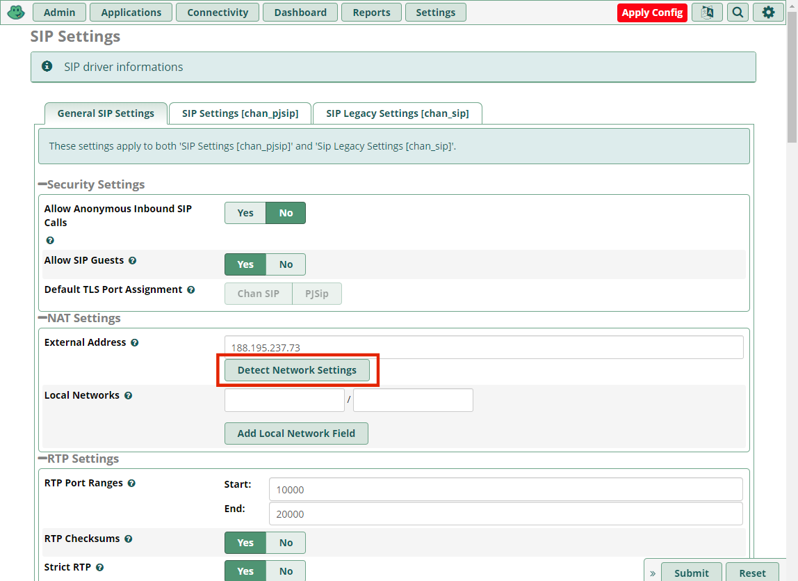
-
Apply the configuration changes by clicking on the red "Apply Config" button in the upper right corner.


-
Reboot the Raspberry Pi to have the SIP changes take effect. At the terminal window, log in, if
not already logged in and type the command "sudo shutdown -r now"

Step 6 - Install & provision softphones
This example will show installing Linphone
softphones on Windows and Android. It is possible to install the softphones on Linux and iOS as well. There
are other softphone software available such as Zoiper.
It is not necessary to use the same operating systems or software.
Linphone on Windows
-
Go to the Linphone Website.
Go to the bottom of the page and click on the "Linphone for desktop" under the "Download" heading.

-
Scroll down the page to the "Download Desktop versions" section and click the "Download Linphone for Windows"
button.

-
Once Linphone has downloaded, run the install package to install Linphone.

 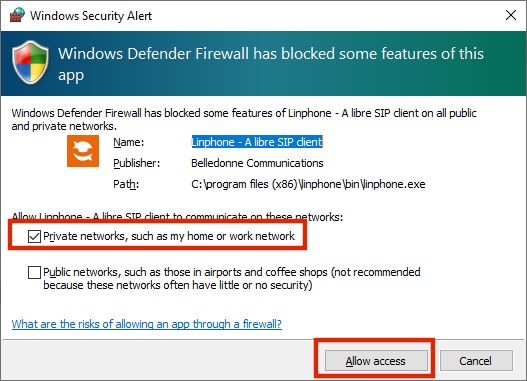
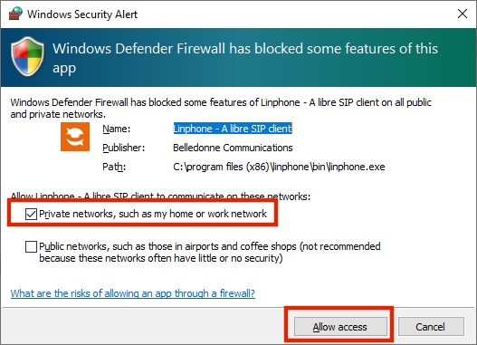
-
Start Linphone and click the "Use a SIP Account" button

-
Enter the following information and click the "Use" button
- Username: This will be the extension that was setup in FreePBX
- SIP Domain: Enter the IP Address of the RasPBX
- Password: Enter the "Secret" value from when the extension was setup
- Transport: Select "UDP"
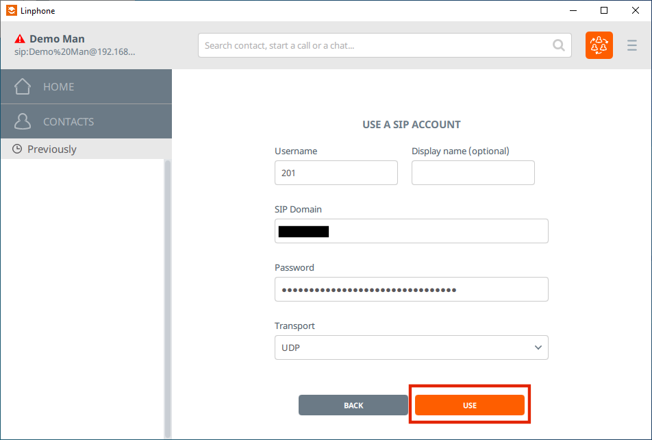
After clicking the "Use" button, you will see the home screen with a green
status in the upper left corner, indicating that you are connected to the FreePBX server.
-
You may dial *43 to perform an echo test. If you do not hear yourself when you talk, reboot
the Raspberry Pi and try again. When changing SIP settings it is sometimes necessary to reboot
the FreePBX server.
Linphone on Android
-
Open the Android "Play Store" application and search for "Linphone". Select "Linphone from
the results and click the "Install" button.
 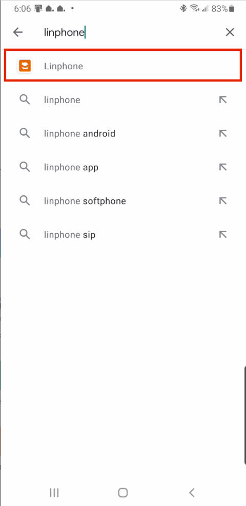
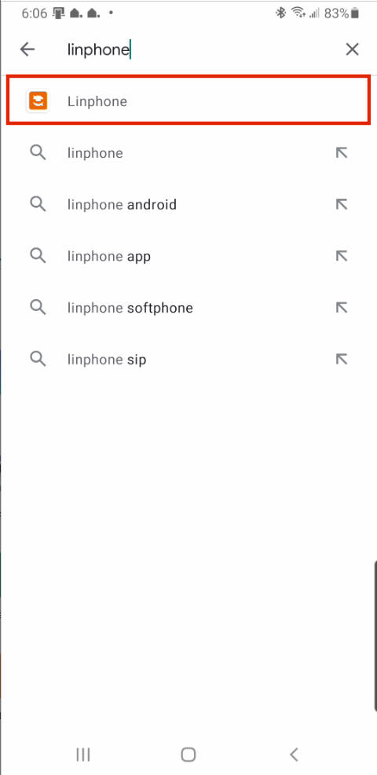

-
Once the Linphone application installs, click the "Open" button to open the application.
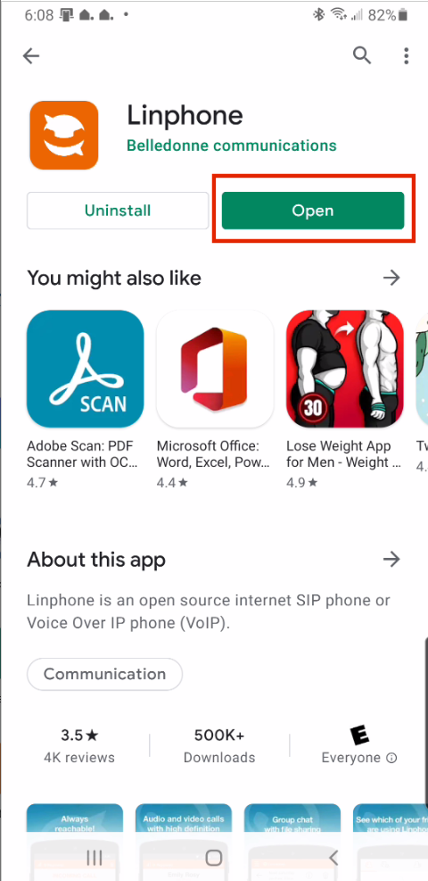
-
Click the "Use SIP Account" button on the "Welcome" screen of the Linphone application.
-
Enter the following information in the SIP account screen and click the "Login" button.
- Username: This will be the extension that was setup in FreePBX
- Password: Enter the "Secret" value from when the extension was setup
- Domain: Enter the IP Address of the RasPBX
- Transport: Select "UDP"
 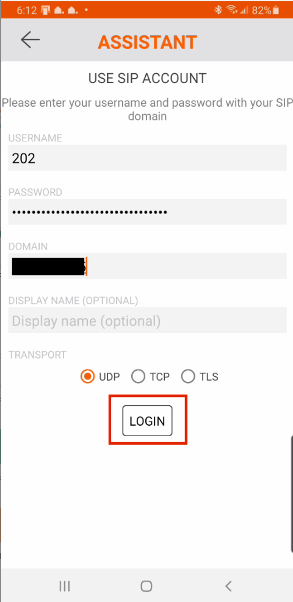
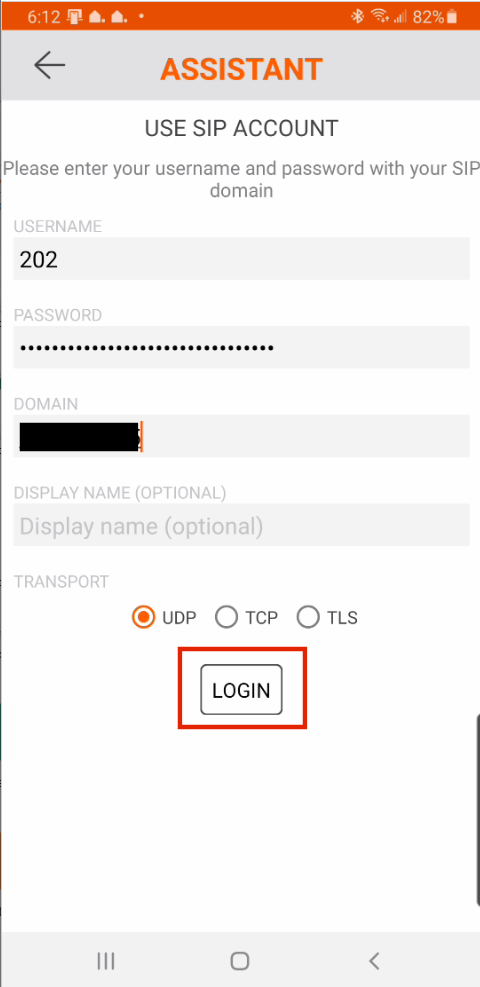
-
Follow the prompts to provide Linphone with the permissions needed to run properly.


-
Return to the Linphone application and note that the upper left corner show a green "Connected"
status, indicating that it is connected to the FreePBX server.
-
Now we must fix an issue with Linphone. Linphone adds the country code prefix to every call so we
need to configure it not to add the country code. Click the menu in the upper left corner to pop
out the menu items.

-
Click on the account at the top of the menu.

-
Locate "Prefix" in the options, remove the value, then click the arrow in the upper
left corner to return to the main screen.

NOTE: If you do not remove the "Prefix" value you will see an error notification
when attempting to call other extensions stating, "User not found".

-
You may dial *43 to perform an echo test. If you do not hear yourself when you talk,
reboot the Raspberry Pi and try again. When changing SIP settings it is sometimes
necessary to reboot the FreePBX server.
When placing your first call, Linphone will ask for additional permissions. When prompted, select "Allow" permissions.

Place a test call
-
From the Windows Linphone application, place a call to the Android application by typing the
extension and clicking the phone icon that appears below the text box.
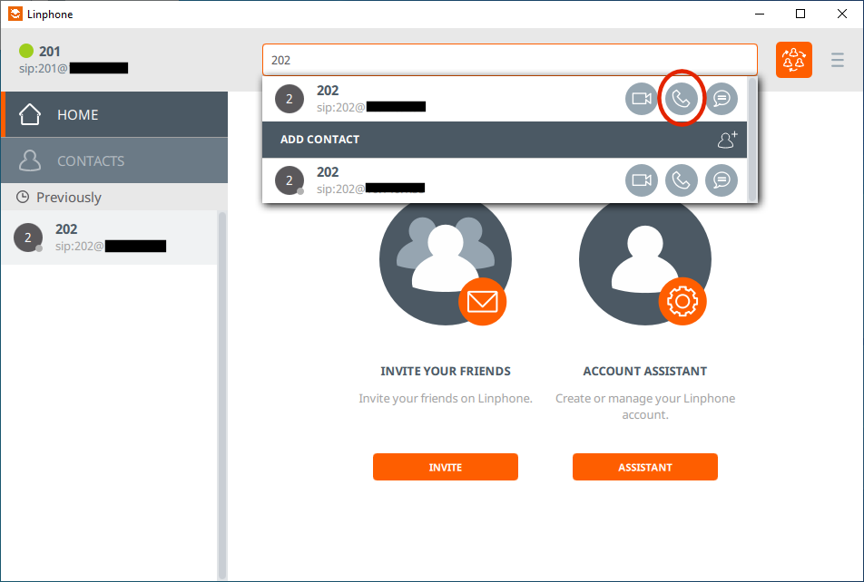
Answer the call on the Android device.

-
From the Android Linphone application, place a call to the Windows application.

Answer the call on the Windows device.